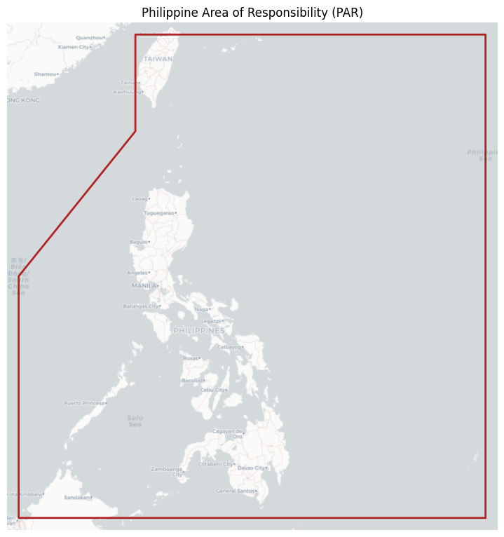
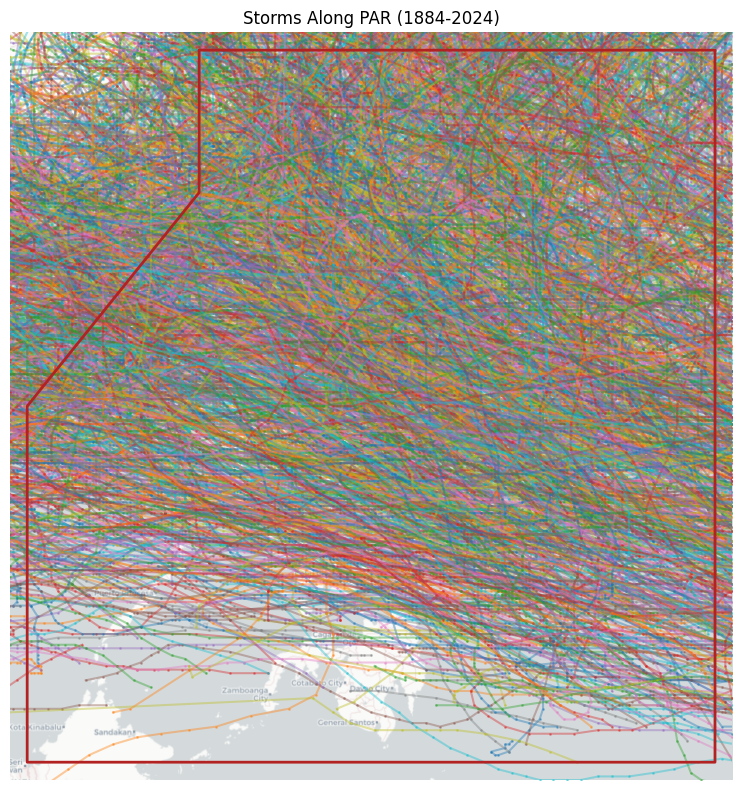
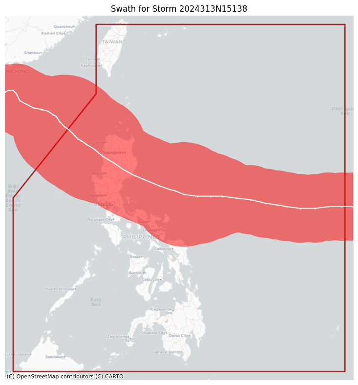
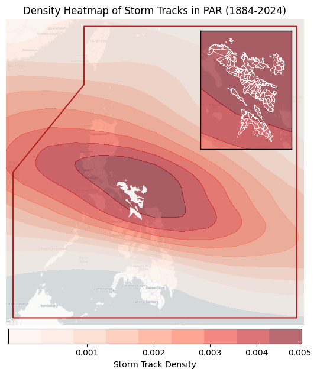

Show code
import os
import contextily as cx
import geopandas as gpd
import matplotlib.pyplot as plt
import osmnx as ox
import pandas as pd
import seaborn as sns
from shapely.geometry import Point, Polygon, box| town | province | geometry | |
|---|---|---|---|
| 0 | Bacacay | Albay | MULTIPOLYGON (((123.84193 13.3341, 123.84204 1... |
| 1 | Camalig | Albay | MULTIPOLYGON (((123.6559 13.06131, 123.65536 1... |
| 2 | Daraga | Albay | MULTIPOLYGON (((123.71487 13.03995, 123.71474 ... |
| 3 | Guinobatan | Albay | MULTIPOLYGON (((123.68355 13.25321, 123.67729 ... |
| 4 | Jovellar | Albay | MULTIPOLYGON (((123.6559 13.06131, 123.65568 1... |
usecols = ["SID", "SEASON", "NATURE", "LAT", "LON", "TOKYO_R30_LONG"]
df_storms = pd.read_csv(STORM_TRACKS_FILE, usecols=usecols, na_values=[" "])
for col in ["SEASON", "LAT", "LON", "TOKYO_R30_LONG"]:
df_storms[col] = pd.to_numeric(df_storms[col], errors="coerce")
df_storms = df_storms.dropna(subset=["SID", "SEASON", "LAT", "LON"])
print(f"Loaded {df_storms['SID'].nunique()} unique storms and {len(df_storms)} total records.")/tmp/ipykernel_9643/2726862864.py:2: DtypeWarning: Columns (1,8,9,51) have mixed types. Specify dtype option on import or set low_memory=False.
df_storms = pd.read_csv(STORM_TRACKS_FILE, usecols=usecols, na_values=[" "])Loaded 13460 unique storms and 718675 total records.| SID | SEASON | NATURE | LAT | LON | TOKYO_R30_LONG | geometry | |
|---|---|---|---|---|---|---|---|
| 1 | 1842298N11080 | 1842.0 | NR | 10.9 | 80.3 | NaN | POINT (80.3 10.9) |
| 2 | 1842298N11080 | 1842.0 | NR | 10.9 | 79.8 | NaN | POINT (79.8 10.9) |
| 3 | 1842298N11080 | 1842.0 | NR | 10.8 | 79.4 | NaN | POINT (79.4 10.8) |
| 4 | 1842298N11080 | 1842.0 | NR | 10.8 | 78.9 | NaN | POINT (78.9 10.8) |
| 5 | 1842298N11080 | 1842.0 | NR | 10.8 | 78.4 | NaN | POINT (78.4 10.8) |
_, ax = plt.subplots(figsize=(8, 8))
gdf_par.plot(ax=ax, color="none", edgecolor="firebrick", linewidth=2)
x_min, y_min, x_max, y_max = gdf_par.total_bounds
padding = 0.5
ax.set_xlim(x_min - padding, x_max + padding)
ax.set_ylim(y_min - padding, y_max + padding)
cx.add_basemap(ax, crs=gdf_boundaries.crs, source=cx.providers.CartoDB.Positron, attribution="")
plt.title("Philippine Area of Responsibility (PAR)")
plt.tight_layout()
plt.axis("off")
filepath = os.path.join(BASE_PATH, "par_polygon.png")
plt.savefig(filepath, dpi=300, bbox_inches="tight")
plt.show()
sids_in_par = gpd.sjoin(gdf_storms, gdf_par, how="inner", predicate="within")["SID"].unique()
gdf_storms_par = gdf_storms[gdf_storms["SID"].isin(sids_in_par)]
gdf_storms_par = gdf_storms_par[gdf_storms_par["NATURE"] == "TS"]
print(f"Found {len(gdf_storms_par['SID'].unique())} tropical storms that passed through the PAR.")Found 2662 tropical storms that passed through the PAR._, ax = plt.subplots(figsize=(8, 8))
gdf_par.plot(ax=ax, color="none", edgecolor="firebrick", linewidth=2, zorder=3)
x_min, y_min, x_max, y_max = gdf_par.total_bounds
padding = 0.5
ax.set_xlim(x_min - padding, x_max + padding)
ax.set_ylim(y_min - padding, y_max + padding)
cx.add_basemap(ax, crs=gdf_boundaries.crs, source=cx.providers.CartoDB.Positron, attribution="")
for storm_id in gdf_storms_par["SID"].unique():
track = gdf_storms_par[gdf_storms_par["SID"] == storm_id]
ax.plot(track.geometry.x, track.geometry.y, marker="o", linestyle="-", markersize=1, alpha=0.4)
min_year, max_year = int(gdf_storms_par["SEASON"].min()), int(gdf_storms_par["SEASON"].max())
plt.title(f"Storms Along PAR ({min_year}-{max_year})")
plt.axis("off")
plt.tight_layout()
filepath = os.path.join(BASE_PATH, "storm_tracks.png")
plt.savefig(filepath, dpi=300, bbox_inches="tight")
plt.show()
nmi_to_meter = 1852
gdf_storms_par["RADIUS_M"] = gdf_storms_par["TOKYO_R30_LONG"] * nmi_to_meter
gdf_storms_par["RADIUS_M"] = gdf_storms_par.groupby("SID")["RADIUS_M"].ffill().bfill()
gdf_storms_par = gdf_storms_par.to_crs("EPSG:32651")
swaths = []
for sid, storm_track in gdf_storms_par.groupby("SID"):
storm_swath = storm_track.geometry.buffer(storm_track["RADIUS_M"]).union_all()
swaths.append({"SID": sid, "geometry": storm_swath})
gdf_storms_par = gdf_storms_par.to_crs(gdf_boundaries.crs)
gdf_swaths = gpd.GeoDataFrame(swaths, crs="EPSG:32651")
gdf_swaths = gdf_swaths.to_crs(gdf_boundaries.crs)
gdf_swaths["geometry"] = gdf_swaths.geometry.buffer(0) # Fix potential invalid geometries
gdf_swaths.head()| SID | geometry | |
|---|---|---|
| 0 | 1884177N17124 | POLYGON ((119.6299 19.04741, 119.57688 18.9352... |
| 1 | 1884186N16125 | POLYGON ((115.02828 17.35736, 114.99692 17.360... |
| 2 | 1884191N15127 | POLYGON ((119.16419 22.39553, 119.11645 22.510... |
| 3 | 1884201N18129 | POLYGON ((120.66847 24.68557, 120.55177 24.746... |
| 4 | 1884208N13127 | POLYGON ((106.48286 15.99222, 106.36064 15.999... |
_, ax = plt.subplots(figsize=(8, 8))
gdf_par.plot(ax=ax, color="none", edgecolor="firebrick", linewidth=2)
x_min, y_min, x_max, y_max = gdf_par.total_bounds
padding = 0.5
ax.set_xlim(x_min - padding, x_max + padding)
ax.set_ylim(y_min - padding, y_max + padding)
cx.add_basemap(ax, crs=gdf_boundaries.crs, source=cx.providers.CartoDB.Positron)
storm_id = gdf_storms_par["SID"].unique()[-3]
swath = gdf_swaths[gdf_swaths["SID"] == storm_id]
swath.plot(ax=ax, color="red", alpha=0.5)
track = gdf_storms_par[gdf_storms_par["SID"] == storm_id]
ax.plot(track.geometry.x, track.geometry.y, marker="o", linestyle="-", markersize=1, color="white")
plt.title(f"Swath for Storm {storm_id}")
plt.axis("off")
plt.tight_layout()
plt.show()
| osmid | highway | oneway | reversed | length | mode | geometry | lanes | name | ref | bridge | service | maxspeed | access | width | junction | tunnel | |||
|---|---|---|---|---|---|---|---|---|---|---|---|---|---|---|---|---|---|---|---|
| u | v | key | |||||||||||||||||
| 300744370 | 2530205870 | 0 | 245920268 | tertiary | False | [False, True] | 903.402532 | road | LINESTRING (124.04017 11.76647, 124.03957 11.7... | NaN | NaN | NaN | NaN | NaN | NaN | NaN | NaN | NaN | NaN |
| 12758303623 | 0 | 289934621 | tertiary | False | [False, True] | 1174.859606 | road | LINESTRING (124.0277 11.75516, 124.02796 11.75... | 2 | NaN | NaN | NaN | NaN | NaN | NaN | NaN | NaN | NaN | |
| 2934697711 | 0 | 1185807595 | tertiary | False | [False, True] | 217.508112 | road | LINESTRING (124.03235 11.76396, 124.03309 11.7... | 2 | NaN | NaN | NaN | NaN | NaN | NaN | NaN | NaN | NaN | |
| 300744933 | 2530203165 | 0 | 291446757 | secondary | False | True | 142.887806 | road | LINESTRING (124.06395 11.76468, 124.06457 11.7... | NaN | NaN | NaN | NaN | NaN | NaN | NaN | NaN | NaN | NaN |
| 8292228841 | 0 | 291446757 | secondary | False | [False, True] | 365.061260 | road | LINESTRING (124.0623 11.76751, 124.06249 11.76... | NaN | NaN | NaN | NaN | NaN | NaN | NaN | NaN | NaN | NaN |
xmin, ymin, xmax, ymax = gdf_boundaries.total_bounds
crop_box = box(xmin, ymin, xmax, ymax)
gdf_swaths = gpd.clip(gdf_swaths, crop_box)
intersecting_swath_ids = gpd.sjoin(gdf_swaths, gdf_transport, how="inner", predicate="intersects")[
"SID"
].unique()
gdf_swaths = gdf_swaths[gdf_swaths["SID"].isin(intersecting_swath_ids)]
gdf_storms_par = gdf_storms_par[gdf_storms_par["SID"].isin(intersecting_swath_ids)]
print(f"Filtered to {len(intersecting_swath_ids)} storms that intersect the Bicol transport network.")Filtered to 671 storms that intersect the Bicol transport network.fig, ax = plt.subplots(figsize=(8, 8))
gdf_par.plot(ax=ax, color="none", edgecolor="firebrick", linewidth=1.5, zorder=3)
gdf_boundaries.plot(ax=ax, color="white", edgecolor="white", linewidth=0.1, zorder=4)
sns.kdeplot(
x=gdf_storms_par.geometry.x,
y=gdf_storms_par.geometry.y,
ax=ax,
cmap="Reds",
fill=True,
alpha=0.6,
zorder=2,
cbar=True,
cbar_kws={
"label": "Storm Track Density",
"orientation": "horizontal",
"pad": 0.01,
"shrink": 0.8,
"ticks": plt.matplotlib.ticker.MaxNLocator(5),
},
)
x_min_par, y_min_par, x_max_par, y_max_par = gdf_par.total_bounds
padding = 0.5
ax.set_xlim(x_min_par - padding, x_max_par + padding)
ax.set_ylim(y_min_par - padding, y_max_par + padding)
cx.add_basemap(
ax,
crs=gdf_boundaries.crs,
source=cx.providers.CartoDB.Positron,
attribution="",
zorder=1,
)
min_year, max_year = int(gdf_storms_par["SEASON"].min()), int(gdf_storms_par["SEASON"].max())
ax.set_title(f"Density Heatmap of Storm Tracks in PAR ({min_year}-{max_year})")
ax.set_axis_off()
ax_inset = fig.add_axes([0.58, 0.605, 0.25, 0.25])
gdf_boundaries.plot(ax=ax_inset, color="none", edgecolor="white", linewidth=0.5, zorder=3)
sns.kdeplot(
x=gdf_storms_par.geometry.x,
y=gdf_storms_par.geometry.y,
ax=ax_inset,
cmap="Reds",
fill=True,
alpha=0.6,
zorder=2,
)
x_min_bicol, y_min_bicol, x_max_bicol, y_max_bicol = gdf_boundaries.total_bounds
inset_padding = 0.2
ax_inset.set_xlim(x_min_bicol - inset_padding, x_max_bicol + inset_padding)
ax_inset.set_ylim(y_min_bicol - inset_padding, y_max_bicol + inset_padding)
cx.add_basemap(
ax_inset,
crs=gdf_boundaries.crs,
source=cx.providers.CartoDB.Positron,
attribution="",
zorder=1,
)
ax_inset.set_xticks([])
ax_inset.set_yticks([])
ax_inset.set_xlabel("")
ax_inset.set_ylabel("")
for spine in ax_inset.spines.values():
spine.set_edgecolor("black")
spine.set_linewidth(1)
filepath = os.path.join(BASE_PATH, "storm_density_heatmap.png")
plt.savefig(filepath, dpi=300, bbox_inches="tight")
plt.show()
img_dir = os.path.join(BASE_PATH, "storm_swath_images")
os.makedirs(img_dir, exist_ok=True)
for sid in gdf_swaths["SID"]:
swath = gdf_swaths[gdf_swaths["SID"] == sid]
track = gdf_storms_par[gdf_storms_par["SID"] == sid]
_, ax = plt.subplots(figsize=(8, 8))
gdf_boundaries.plot(ax=ax, color="none", edgecolor="gray", linewidth=1)
swath.plot(ax=ax, color="red", alpha=0.5, zorder=1)
ax.plot(
track.geometry.x, track.geometry.y, marker="o", linestyle="-", markersize=1, color="white", zorder=2
)
x_min, y_min, x_max, y_max = gdf_boundaries.total_bounds
padding = 0
ax.set_xlim(x_min - padding, x_max + padding)
ax.set_ylim(y_min - padding, y_max + padding)
cx.add_basemap(ax, crs=gdf_swaths.crs, source=cx.providers.CartoDB.Positron, attribution="")
plt.title(f"Storm Swath: {sid}")
plt.axis("off")
plt.tight_layout()
out_path = os.path.join(img_dir, f"{sid}.png")
plt.savefig(out_path, dpi=300, bbox_inches="tight")
plt.close()dirpath = os.path.join(BASE_PATH, "storm_swath_geometries")
os.makedirs(dirpath, exist_ok=True)
for index, row in gdf_swaths.iterrows():
sid = row["SID"]
gdf_single_swath = gpd.GeoDataFrame([{"SID": sid, "geometry": row["geometry"]}], crs=gdf_swaths.crs)
filepath = os.path.join(dirpath, f"{sid}.gpkg")
gdf_single_swath.to_file(filepath, driver="GPKG")